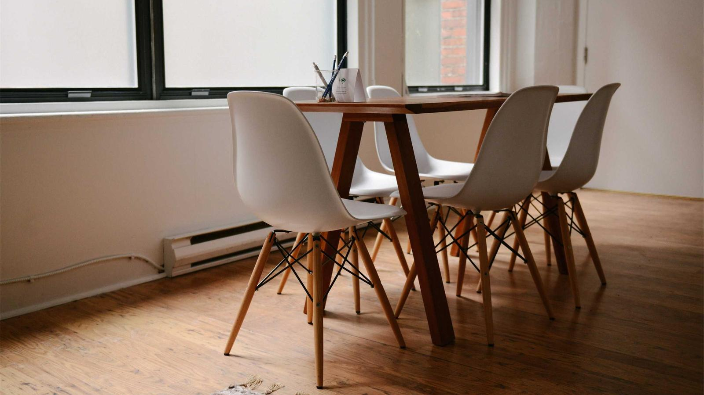

Community Partners
Local businesses and organisations we share a neighborhood, and often a project, with.
Our partners
Empowering children of all ages to work with their caregivers to build relationships and strengthen the Milwaukee community. kicmke.org
A local cottage baker and our shared kitchen manager, who connects food entrepreneurs to the building and works with our youth on service projects. jobeabakes.com
A business membership organisation promoting economic growth across the North Shore. discoverthenorthshoremke.com
Working towards a welcoming and inclusive Wisconsin for LGBTQ+ businesses. wislgbtchamber.com
Established in 1999 to support retail and service businesses in the village. shorewoodwi.com